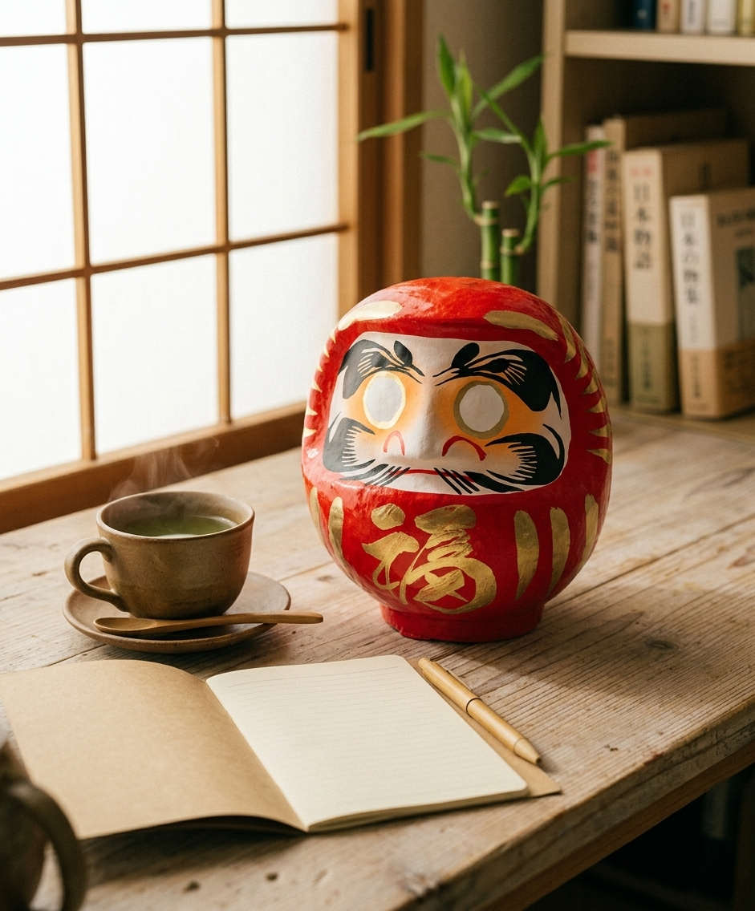

A handcrafted Japanese daruma doll made in Japan — the traditional symbol of perseverance, good luck, and well wishes.

Make a wish, paint in one eye, and finish the other when it is achieved. It turns a goal into something you can see.
Handcrafted in the traditional papier-mache style, with hand-painted gold detailing.
Given for new jobs, exams, and new years, it carries an encouraging message.
Daruma is modeled on Bodhidharma and is known for the saying: fall seven times, get up eight. The round, weighted body is designed to pop back upright.
On a desk or shelf it is a bold pop of red and a quiet nudge toward your goals.
Choose one clear goal for the year or season.
Fill in one eye to start your commitment.
Paint the second eye once you reach your goal.
Yes, traditional daruma dolls have blank eyes so you can fill them in as part of the ritual.
Red is the classic color for general good luck; other colors are associated with specific wishes.
It is a papier-mache style craft piece, so keep it dry and handle it gently.
A traditional Japanese daruma doll made in Japan — see current pricing and availability on Amazon.
Check Price on Amazon →